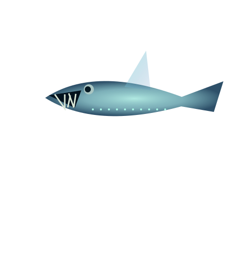
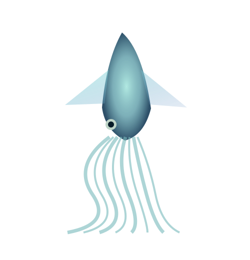

Когда привычные ориентиры пропадают, природа находит новые решения. Светящиеся приманки, необычные плавники и большие глаза — здесь у каждой формы есть своя история.
Нажми «Узнать больше», чтобы раскрыть карточку. Иллюстрации художественные; свечение в режиме темноты — визуальный эффект, а не указание на биолюминесценцию каждого вида.
ОБЪЕКТ / 01
АВТОРСКАЯ СТИЛИЗАЦИЯ
ПРИМАНКА, КОТОРАЯ СВЕТИТСЯ
Удильщик
Вместо долгой погони многие глубоководные удильщики подманивают добычу светящейся приманкой перед пастью.
Узнать больше
+
Светящийся вырост помогает привлечь животное достаточно близко. Это пример того, как биолюминесценция становится инструментом охоты. Глубоководные удильщики — разнообразная группа, а не один вид.
ОБЪЕКТ / 02

АВТОРСКАЯ СТИЛИЗАЦИЯ
ЗУБЫ БОЛЬШЕ, ЧЕМ ОЖИДАЕШЬ
Рыба-гадюка
Большая пасть и длинные тонкие зубы помогают этой рыбе удерживать добычу в толще воды.
Узнать больше
+
Тихоокеанская рыба-гадюка — один из выразительных примеров глубоководного хищника. Светящиеся органы и необычная форма тела отражают жизнь в среде, где встреча с пищей не гарантирована.
ОБЪЕКТ / 03
АВТОРСКАЯ СТИЛИЗАЦИЯ
ПЛАВНИКИ, ПОХОЖИЕ НА УШИ
Осьминог Дамбо
Этот образ объединяет осьминогов с парой плавников, напоминающих большие уши. Они помогают двигаться в воде.
Узнать больше
+
Прозвище связано с внешностью, а не с отдельным видом. Эти осьминоги используют движения плавников и рук, чтобы перемещаться, и встречаются на больших глубинах.
ОБЪЕКТ / 04

АВТОРСКАЯ СТИЛИЗАЦИЯ
БОЛЬШОЙ И РЕДКО НАБЛЮДАЕМЫЙ
Гигантский кальмар
Один из самых известных крупных беспозвоночных океана — и всё ещё непростой объект для наблюдения.
Узнать больше
+
У кальмаров восемь рук и два более длинных ловчих щупальца. Гигантский кальмар долго был известен главным образом по найденным останкам; наблюдать его в естественной среде намного сложнее.
02 / ПРИСПОСОБИТЬСЯ К ДРУГОМУ МИРУ
КАК ЖИТЬ,
КОГДА ВОКРУГ ТЕМНО?
01
Создать свой свет
Свечение помогает некоторым животным привлекать добычу, подавать сигналы или отвлекать хищников. У разных видов оно выполняет разные задачи.
02
Найти пищу
В глубины опускаются органические частицы — «морской снег». Другие обитатели охотятся, а сообщества у источников опираются на химическую энергию.
03
Выдержать давление
На глубине давление растёт. Особенности тканей, клеток и обмена веществ позволяют глубоководным организмам жить там, где человеку нужны специальные аппараты.
МЫ ТОЛЬКО ПРИОТКРЫЛИ ДВЕРЬ
ЧЕМ ГЛУБЖЕ СМОТРИМ,
ТЕМ БОЛЬШЕ
ВОПРОСОВ.
Вернись к погружению и посмотри на глубины уже по-другому.
 АВТОРСКАЯ СТИЛИЗАЦИЯ
АВТОРСКАЯ СТИЛИЗАЦИЯ